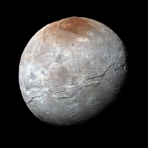
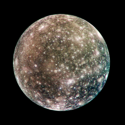
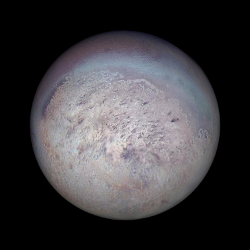
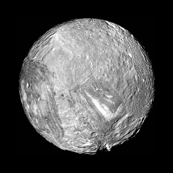

Enquanto procuramos a solução dos problemas de desenvolvimento de software
em novas linguagens de programação, a verdadeira revolução se dá com aquilo
que já temos em mãos !
Linguagem c++ e lua se complementam, e com empenho e dedição uma nova plataforma
pode ser criada juntando aquilo que sempre quisemos, performance da
linguagem C, alta concorrência, baixo consumo de memória, tudo isso com a produtividade
de linguagem de script utilizando reload instantâneo do código.
Projetos
| 
| CHARON |
Interprador e console em lua com profile carregado automático por aplicação |
| 
| CALLISTO |
Ferramenta para execução de testes com janela de notificação |
| 
| TRITON |
Execução de testes (e outras tarefas) multi-thread |
|
| RHEA |
Executor de tarefas |
| 
| MIRANDA |
Servidor Web escrito em C++ de alta performance e concorrência |
Downloads
Este é um projeto do Charon, onde coloco o link para o youtube. Youtube.com.br/MeuCanal